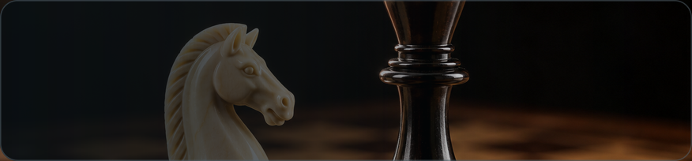

Классическая игра для двоих

Ходят белые
Кем станет пешка?
Ладья ходит по прямой, слон — по диагонали, ферзь — и так и так. Конь — буквой «Г», только он умеет перепрыгивать через фигуры.
Король — на одно поле в любую сторону. Пешка — на одно поле вперёд (из начального ряда можно на два), а бьёт по диагонали.
Шах — королю грозит взятие. Ходить можно только так, чтобы шах исчез.
Мат — шах без спасения: партия окончена победой того, кто его поставил.
Рокировка — король и ладья сходятся, если между ними пусто, обе не ходили и король не под боем.
Пешка дошла до края — выбирайте: ферзь, ладья, слон или конь.
Ничья — шаха нет, а ходить нечем (пат), либо трижды повторилась одна позиция.